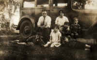
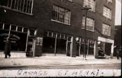
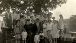
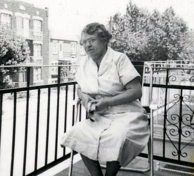
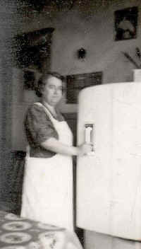
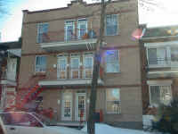
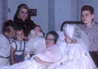

|
 Marie-Anna
et Rosario s'épousent le 16 janvier 1917 dans la paroisse Saint-Zotique de Montréal. Ils sont
mineurs, c'est un mariage simple car Rosario est
en deuil de son père. Son tuteur doit donner son consentement au mariage.
Se
marier jeune est tout à fait normal à l'époque, le jeune couple
s'installant habituellement avec les parents de l'un ou de l'autre. Mais
Rosario et Marie-Anna ont la chance de vivre chez-eux dès le début de
leur union, Marie-Anna venant tout simplement rejoindre Rosario dans la maison et les meubles
de ses parents, au 1121 rue Saint-Antoine. Alphonse Charette
fils avait bâti cette résidence pour sa
famille en 1907. Il
est plausible de penser qu'Alexandre, le jeune frère de quinze ans de
Rosario, ait habité avec le nouveau couple,
sinon il a été pris en charge par leur tuteur. Marie-Anna
et Rosario s'épousent le 16 janvier 1917 dans la paroisse Saint-Zotique de Montréal. Ils sont
mineurs, c'est un mariage simple car Rosario est
en deuil de son père. Son tuteur doit donner son consentement au mariage.
Se
marier jeune est tout à fait normal à l'époque, le jeune couple
s'installant habituellement avec les parents de l'un ou de l'autre. Mais
Rosario et Marie-Anna ont la chance de vivre chez-eux dès le début de
leur union, Marie-Anna venant tout simplement rejoindre Rosario dans la maison et les meubles
de ses parents, au 1121 rue Saint-Antoine. Alphonse Charette
fils avait bâti cette résidence pour sa
famille en 1907. Il
est plausible de penser qu'Alexandre, le jeune frère de quinze ans de
Rosario, ait habité avec le nouveau couple,
sinon il a été pris en charge par leur tuteur.
Rosario a reçu un
bon héritage de son père mais, étant mineur, son oncle et tuteur, Aldéric
Lavoie, administre ses biens. Ce dernier est menuisier, mais il a aussi
un commerce de vente de bois, de charbon et de glace à Saint-Henri.
Rosario travaille pour lui les premières années de son mariage.
Selon le témoignage de
Fleurette Lavoie, cousine de Rosario, lui et Marie-Anna "formaient un beau
couple". Il est indéniable que Rosario aime beaucoup son épouse et il la
traitera "comme une reine" toute sa vie.
Par les
annuaires Lovell* nous pouvons suivre la famille de Rosario,
et aussi connaître son occupation.
De 1917 à 1919, le jeune
couple habite le 1121 Saint-Antoine, Rosario est ice mcht.
De 1919 à 1923 ils habitent le 444 Sainte-Émélie, donc en biais de la mère de
Marie-Anna, Alphonsine qui est au 455 Sainte-Émélie. L'occupation de Rosario inscrite est mech.
De 1924 à 1926 ils vivent au 284 Saint-Philippe.
De 1926 à 1928 ils sont au 266 Saint-Philippe. Rosario est inscrit comme wood &
coal 1117 St-Antoine. Le 1117 St-Antoine est juste au coin de Saint-Philippe, sur l'emplacement du garage que fera construire Rosario
plus tard.
|
Marie-Anna et Rosario s'épousent à une époque plutôt
houleuse, et la
guerre s'étire en Europe. Le
grippe
espagnole s'abat sur
l'Amérique. Rosario
craint sûrement pour sa jeune famille, lui qui a perdu frères et sœurs lors d'épidémies au début du siècle.
Le 25 avril 1919, Alphonse
Charette,
le grand-père et le parrain de
Rosario, décède subitement. C'est une
grande perte pour lui car son grand-père avait
sûrement remplacé son père, il devait compter sur son
soutien et ses conseils.
Le 13 août 1924, Rosario vit un autre deuil. Son frère
unique, Alexandre, célibataire et étudiant en pharmacie à
l'Université de Montréal, meurt dans un accident
d'automobile.
En 1926
la famille Rosario
emménage au 266 Saint-Philippe, qui deviendra le 910 lors des changements
de numérotation des adresses en 1928. Ils
habitent le rez-de-chaussée de cette propriété de trois étages
pendant plus de dix ans. Rosario loue les étages
supérieurs. C'est tout près de
l'intersection Saint-Antoine où Rosario travaille. Ce dernier aurait
été propriétaire de plusieurs autres propriétés héritées de son
père, et de son frère. La famille va souvent à la
campagne voir les parents et amis qui ont un chalet. Ils louent
eux-mêmes des chalets pour les vacances. La famille va aussi dans la
région du Saguenay visiter des parents de Marie-Anna. Un d'entre eux
souffrant de sclérose en plaques, Rosario aurait fabriqué une sorte de
chariot roulant pour lui permettre de se déplacer (Récit
transmis par Ghislaine qui l'a reçu de sa famille).
Rosario aime les
automobiles et il en change souvent. Il tient cela de son père et son
grand-père Charette.
|
 Rosario, Thérèse et Benoît
Rosario, Thérèse et Benoît
|
 : :
Thérèse, Benoît, 1924
|

Rue St-Philippe,
Gérard,Benoît,Jean-Noël
|

En attente du traversier, Saguenay, vers 1921
|

Alphonsine, Thérèse, Benoît, Marie-Anna et
Lydia Bédard, une cousine de Marie-Anna, 1921
|
En novembre 1928 Rosario dépose à l'hôtel de ville de
Montréal les plans d'un garage qu'il veut construire au 4271 Saint-Antoine.
À noter que, cette
même année, la numérotation des adresses change et que le
1117 Saint-Antoine devient le
4271. En1930, pour la première fois, le Garage Philippe apparaît au 4271
Saint-Antoine, coin Saint-Philippe,
dans l'annuaire Lovell. Rosario est bien identifié comme le propriétaire.
Et ce jusqu'en 1938.
|
   
     |
|

Garage
Philippe, de Rosario |

Garage en 2006, photo de David
|
LE "GARAGE PHILIPPE", UN GARAGE MODERNE
Le service des pompes du garage
est ouvert
24 heures par jour, 7 jours par semaine. Ce garage a quatre étages, on y monte les autos
aux étages par un ascenseur. C'est là que les jeunes fils de Rosario
font leur apprentissage de la conduite automobile. Les employés de Rosario
s'amusent à laisser
conduire les fils du patron pour faire entrer ou sortir les voitures de
l'ascenseur (souvenir
de Gérard).
Le comptable de Rosario est Henri Philippe, il est aussi un de ses
locataires. Sa conjointe, Imelda Verreault, est une bonne
amie de Marie-Anna. Leur fille Rachel épousera Rosaire, fils de
Rosario.
Au 4277 Saint-Antoine
(une
partie du rez-de-chaussée du garage)
Rosario loue dès le début, et ce jusqu'en 1939, un local à
Napoléon Lapierre
qui y installe une cordonnerie.
|
En 1929,
le 12 octobre, Marie-Anna perd sa mère Alphonsine Gagnon. Le 24 octobre, le jeudi
noir, a lieu le crash boursier qui déclenche une
grave crise économique mondiale.
Rosario construit quand même son commerce. Mais des
années plus difficiles financièrement s'annoncent pour lui qui,
semble-t-il, est mal conseillé et n'est pas l'homme d'affaires le plus
avisé. Il n'a pas la "bosse des affaires", et il est très
généreux avec tous.
En 1935, le
26 avril, décès de la grand-mère de Rosario,
Rosianne Miron, veuve d'Alphonse Charette sr. Elle était le dernier
pilier et le centre de la grande famille Charette de Saint-Henri.
|


|
Rosianne
réunissait autour d'elle plusieurs enfants, petits-enfants et
arrière-petits-enfants. Sa grande maison de pierre construite
par son époux, au 4230 St-Antoine, avait connu d'innombrables
réunions familiales pour souligner des moments heureux ou
douloureux. Le sous-sol y était réservé
spécialement pour ces réunions, on y retrouvait même une
cuisine aménagée pour les réceptions. Plusieurs jouaient du piano et
d'autres instruments de musique et les gens s'amusaient bien
durant ces fêtes. On chantait, dansait, jouait aux cartes.
(Récit
transmis par Ghislaine qui l'a entendu de Rita et Fleurette Lavoie,
cousines de Rosario)
|
 À
la fin des années 1930 Rosario est malade,
son fils Jean-Noël se rappelle d'une infirmière à domicile
posant des ventouses dans le dos de son père, penché sur le
piano du salon. De quelle maladie souffre-il? Ghislaine se rappelle avoir toujours
entendu dire que son père avait un "coeur de boeuf",
c'est-à-dire un problème cardiaque lui interdisant de trop grands efforts
physiques. À
la fin des années 1930 Rosario est malade,
son fils Jean-Noël se rappelle d'une infirmière à domicile
posant des ventouses dans le dos de son père, penché sur le
piano du salon. De quelle maladie souffre-il? Ghislaine se rappelle avoir toujours
entendu dire que son père avait un "coeur de boeuf",
c'est-à-dire un problème cardiaque lui interdisant de trop grands efforts
physiques.
Rosario loue tout son garage pour 100$ par mois,
ne pouvant plus s'occuper de son commerce. Peu après, son
locataire sous-loue chaque étage pour 500$ par mois à
l'armée canadienne! Rosario le "prend personnel"
(souvenir de Jean-Noël), c'est-à-dire qu'il y voit là une
preuve de son incompétence en affaires. Cette perte financière, s’ajoutant
à d’autres, mine le moral de Rosario découragé et lui porte un coup
fatal.
En se basant sur l'annuaire Lovell* de
1939-1940 nous apprenons que Rosario a vendu le 910 Saint-Philippe à
"Ménard Vic et Daoust Miss
Cecile" et qu'il est
déménagé
au 339 Saint-Philippe. Quant à son commerce, on
peut supposer qu'il l'a vendu aussi car le
4271 Saint-Antoine est devenu le Garage Bessette.
 Rosario
décède le 21 mai 1940 à l'âge de 42 ans. Sa cousine Yolande Lavoie, qui vient de terminer son cours d'infirmière, se trouve à son chevet
la nuit de son décès. Elle avait
veillé sur Rosario les derniers temps, sur Marie-Anna aussi, très
éprouvée par la maladie de son époux, et sur les plus jeunes
enfants. (Récit
transmis par Ghislaine qui l'a entendu de Rita et Fleurette Lavoie,
cousines de Rosario) Rosario
décède le 21 mai 1940 à l'âge de 42 ans. Sa cousine Yolande Lavoie, qui vient de terminer son cours d'infirmière, se trouve à son chevet
la nuit de son décès. Elle avait
veillé sur Rosario les derniers temps, sur Marie-Anna aussi, très
éprouvée par la maladie de son époux, et sur les plus jeunes
enfants. (Récit
transmis par Ghislaine qui l'a entendu de Rita et Fleurette Lavoie,
cousines de Rosario)
Marie-Anna doit prendre conseil et planifier sa
situation financière. Sa
cadette n'a pas cinq ans et ses fils sont encore aux études, quant à
elle, elle n'a aucune expérience de travail. Elle doit donc faire
en sorte que l'héritage qu'elle reçoit de son époux soit géré de
telle sorte qu'il puisse assurer ses besoins jusqu'à la fin de ses
jours.

En 1941, Marie-Anna emménage au 7965 rue Saint-Gérard. Elle y vit
plusieurs années, y marie ses enfants et continue d'y élever sa petite
dernière, Ghislaine, qu'elle met pensionnaire au couvent de Saint-Aimé
dès l'âge scolaire. Une
autre guerre a débuté en 1939, deux de
ses
fils y participent, Gérard dans l'armée régulière et Rosaire
dans l'aviation. Les logements disponibles étant peu nombreux à
cette période, certains de ses enfants habitent chez elle les premiers
temps de leur mariage.
|
UNE
FEMME MODERNE
Marie-Anna est une femme
moderne qui aime les nouveaux appareils ménagers électriques
facilitant la vie. Les fers à repasser électriques et les réfrigérateurs
ne se retrouvent pas encore dans toutes les maisons dans les années
1940. Au début des années 1950, Marie-Anna est
photographiée dans son salon devant sa première télévision.
Dans les années 1950, elle se fait installer une cabine-douche
dans son logement de la rue Des Écores. Bien des gens de cette
époque n'avait même pas encore de bain, ni d'eau chaude.
Au début des années 1960 elle a la première télévision
couleur, alors qu'aucune émission couleur n'est encore diffusée
au Canada. Ces items sont, pour la plupart, achetés aux États-Unis
par ses enfants, lorsqu'ils vont, par exemple, à New-York. |



|
En 1952 Marie-Anna déménage rue
Des Écores dans la paroisse Saint-Barthélemy. 
L'année suivante elle achète le bloc de six logements voisin au sud et
emménage au rez-de-chaussée, le 7082. Ses fils Gérard et Jean-Noël y
louent
chacun un logement. Les loyers constituent son revenu principal.
Le 24 mai 1957 Marie-Anna perd son
fils aîné Benoît, décédé d'un cancer généralisé. La famille ne
garde pas contact avec la veuve, et les trois filles de Benoît, suite
à une mésentente sur une mise de fonds que Marie-Anna avait prêté à
son fils pour qu'il puisse bâtir un garage Esso, et deux logements
locatifs au-dessus, à Saint-Luc, où il vivait avec sa famille.
En
1957 Marie-Anna déménage dans une résidence pour personnes âgées
sur le boulevard Gouin, et quelques années plus tard, dans un hospice
de Marieville, son état de santé se détériorant. Marie-Anna y décède
le 8 juillet 1966, à l'âge de 69 ans, d'un cancer des intestins.
|

Un dimanche d'automne
1962
Au premier plan, Marie-Anna, Mme
Philippe, Ghislaine, Rachel, Jacqueline et bébé Denis.
|

Les enfants de Rosaire
et ceux de Gérard, visitant leur grand-mère à Marieville, et
Ghislaine
|

Les enfants de Rosaire
et Ghislain
|
*
Les annuaires Lovell couvrent du 1er juillet d'une année au 30
juin de l'autre. Les données sont récoltées de porte en porte
en mai. Dans certains annuaires les propriétaires sont
identifiés par un astérisque. Le métier est souvent inscrit,
ainsi que l'employeur. On peut faire des recherches par le nom de
la personne, ou par l'adresse. Ils sont disponibles sur le site
des Archives
Nationales.
|